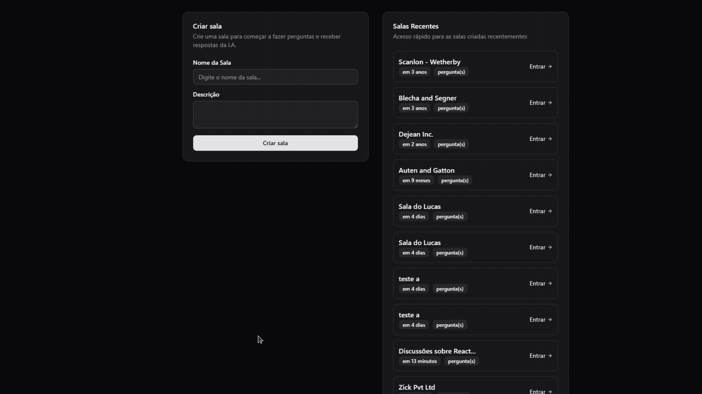

Plann.er

Plann.er é um projeto para planejar viagens. Com ele é possível montar planos de viagem com amigos, registrar atividades e links úteis, adicionar convidados por e-mail, visualizar atividades, alterar o local e data e confirmar participação por e-mail recebido. Esse projeto foi desenvolvido durante o evento NLW Journey.
Esse projeto representa a parte do backend do projeto, onde as principais tecnologias utilizadas foram Java, Spring Boot, Flyway, Lombok, H2 Database
Repositório do projeto e mais informações
https://github.com/zlucasftw/rocketseat-nlw-java
Nearby
Nearby é um aplicativo mobile feito em React Native e Expo de clube de benefícios com cupons para utilizar em estabelecimentos próximos a sua localização Esse projeto foi desenvolvido durante o evento NLW Mobile.
Esse projeto representa completamente o aplicativo mobile, onde as principais tecnologias utilizadas foram React Native, TypeScript, Expo, além de integração com API do Google Maps que possibilitou a visualização do mapa.
Repositório do projeto e mais informações
https://github.com/zlucasftw/nearby-react-native-nlw-mobile
Imagine
Imagine é um site sobre bandas e filmes que visa criar uma experiência agradável com curadoria de conteúdo e apelo a nostalgia para usuários que buscam uma experiência autêntica. Foram utilizadas as tecnologias HTML, CSS e JavaScript para desenvolver a interface do usuário e garantir uma navegação fluida.
Esse site foi desenvolvido durante o curso de Técnico em Informática para Internet para o projeto integrador do módulo de desenvolvimento web, onde consolidei meus conhecimentos em desenvolvimento desde o design com protótipos com Figma até o site final hospedado.
Posteriormente utilizei o site na matéria de UX - Arquitetura e Usabilidade para aplicar melhorias necessarias ao site e voltar a desenvolver o site, mas focando principalmente em aplicar os conhecimentos aprendidos durante a matéria.
Repositório do projeto e mais informações
https://github.com/zlucasftw/imagine-website (Repositório privado no momento)
URL Shortner
URL Shortner é um projeto backend em Java sendo um encurtador de URLs utilizando arquitetura serverless com AWS.
O diferencial dessa aplicação é ter uma proposta da criação de um sistema escalável, de fácil manutenção e custos operacionais reduzidos devido à ausência de servidores dedicados e com serviços gerenciados totalmente pela AWS, um dos pilares da arquitetura serverless.
O sistema consiste na criação de uma API onde usuários conseguem enviar uma URL que é recebida pelo API Gateway, e passa pelo processamento em uma função AWS Lambda que no final irá salvar a URL original em um Bucket S3.
No retorno, se recupera a URL original do Bucket S3, passa por o processamento por uma AWS Lambda de redirecionamento, se gera uma URL encurtada que é retornada ao usuário.
As principais tecnologias utilizadas foram Java, AWS com API Gateway, Lambda e S3, Lombok e Jackson.
Repositório do projeto e mais informações
https://github.com/zlucasftw/rocketseat-aws-url-shortener
Freelance Hours

Freelance Hours é um projeto desenvolvido em Laravel, onde freelancers podem enviar propostas de horas que podem contribuir em determinado projeto disponível para enviar uma proposta.
É possível nele visualizar se propostas ainda estão sendo aceitas, quanto tempo falta para o encerramento, quais tecnologias necessárias para o projeto, um ranking de quantidade de propostas e menor tempo, e quem fez a publicação do projeto e a sua avaliação, tendo um gerenciamento de usuários na plataforma.
As principais tecnologias utilizadas foram PHP, Laravel, Livewire e Tailwind.
Repositório do projeto e mais informações
https://github.com/zlucasftw/rocketseat-freelancehours-php
Portfolio - "The Dude"

Portfolio - "The Dude" é um projeto desenvolvido em HTML e CSS, onde fiz enquanto estava durante o segundo período da faculdade, em 2023, e para aprender e aperfeiçoar meus conhecimentos em HTML, CSS e JavaScript.
É um portfolio "tech" fictício feito sobre sobre o personagem "The Dude" do filme "O Grande Lebowski". Nele onde é possível visualizar informações sobre o personagem, suas habilidades, redes sociais.
O que me motivou na escolha na época, foi de que o filme é um dos meus favoritos, e decidi personalizar o portfolio com base no tema do filme e focado no personagem em específico, servindo como uma forma de praticar e aprender mais sobre desenvolvimento web mesmo que divertido.
Repositório do projeto e mais informações
https://zlucasftw.github.io/lebowski-portfolio/
Dev Stage

Dev Stage é um projeto para inscrição e indicações para eventos com ranking de indicação e responsividade realizado durante o evento NLW Connect.
Esse projeto representa a parte do frontend do projeto, onde as principais tecnologias utilizadas foram Next.js, React, Tailwind CSS, Biome, Orval
Repositório do projeto e mais informações
https://github.com/zlucasftw/rocketseat-nlw-connect-devstage-react
NLW Agents

"NLW Agents" realizado durante o evento NLW Agents, é um projeto que consiste na criação de salas para aulas, eventos ao vivo, com uma descrição, e realização de perguntas para cada sala.
É utilizado um áudio seja da aula, evento, livestream, que é transformada em embeddings para busca semântica, onde é possível encontrar trechos relevantes do conteúdo de forma rápida e eficiente, e com a utilização de uma inteligência artificial, é possível gerar respostas para as perguntas feitas pelos usuários, com base no conteúdo.
Nesse projeto, em que o foco foi mais o backend e garantir seu funcionamento, mas também com uma interface frontend,onde as principais tecnologias utilizadas foram Next.js, React, TypeScript, Tailwind CSS, Fastify, Drizzle, Postgres (com extensão pgvector) e API do Gemini
Repositório do projeto e mais informações
https://github.com/zlucasftw/nlw-agents-server
https://github.com/zlucasftw/nlw-agents-web
